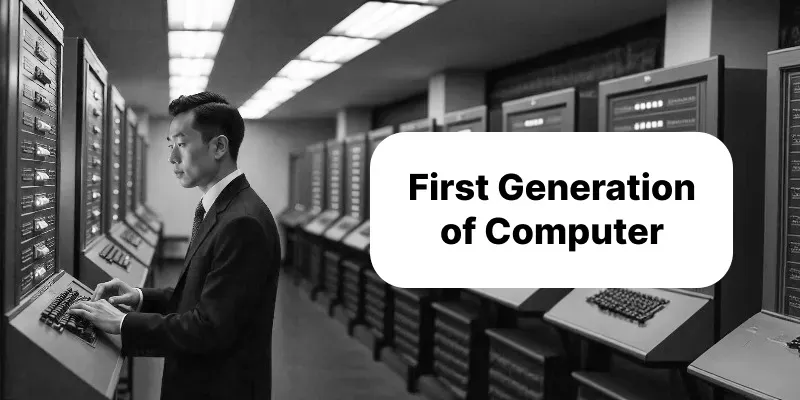
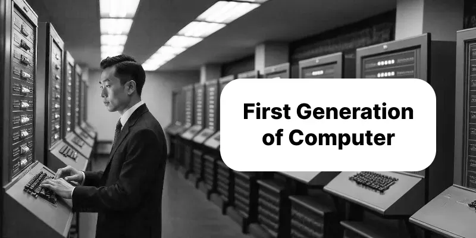

First Generation of Computer (1945-1956)
 

Overview
The first generation was the beginning of electronic digital computers. Instead of mechanical or electromechanical parts, these machines worked with vacuum tubes to process information. They were very large, slow, expensive, and power-hungry, but they introduced true electronic computing and opened the door to modern computer technology.
Main Features
- Technology Used
- Used vacuum tubes for processing and magnetic drums for memory. Programs were written in machine language (0s and 1s).
- Size and Build
- Very large and heavy, filling entire rooms. Generated extreme heat and often overheated. Needed big cooling systems.
- Input & Output
- Input devices: punched cards, switches, paper tapes. Output: printers, punched cards, electric signals, panel lights.
- Memory
- Magnetic drums with small storage (1–4 KB). Secondary storage was almost none.
- Processing Speed
- Very slow, performing only thousands of operations per second.
- Reliability
- Not reliable due to frequent vacuum tube failures. Required constant maintenance.
- Programming
- Programs written in machine language, making development and debugging very difficult.
Examples
- ENIAC (1946, USA) – Over 18,000 vacuum tubes, used for military and scientific calculations.
- EDVAC (1949, USA) – Introduced the stored-program concept.
- UNIVAC I (1951, USA) – First commercial computer for census and business data.
- IBM 701 – First IBM scientific computer, used in research and defense.
Application Areas
- Scientific research – Weather, atomic energy, mathematics
- Military defense – Missile design, code-breaking, simulations
- Government work – Census, tax, population reports
- Business – Payroll, accounting, inventory management
Conclusion
The first generation of computers was a revolution in computing. Despite being huge, costly, difficult to program, and unreliable, they provided the foundation for future computer development. They proved electronic computing was possible, leading directly to smaller, faster, and more reliable second-generation computers.
Advancements over Mechanical Computers
- Much faster performance
- More accurate results
- Automatic execution of long sequences
- Capable of solving complex problems